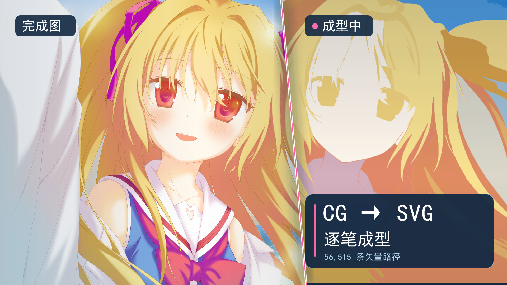
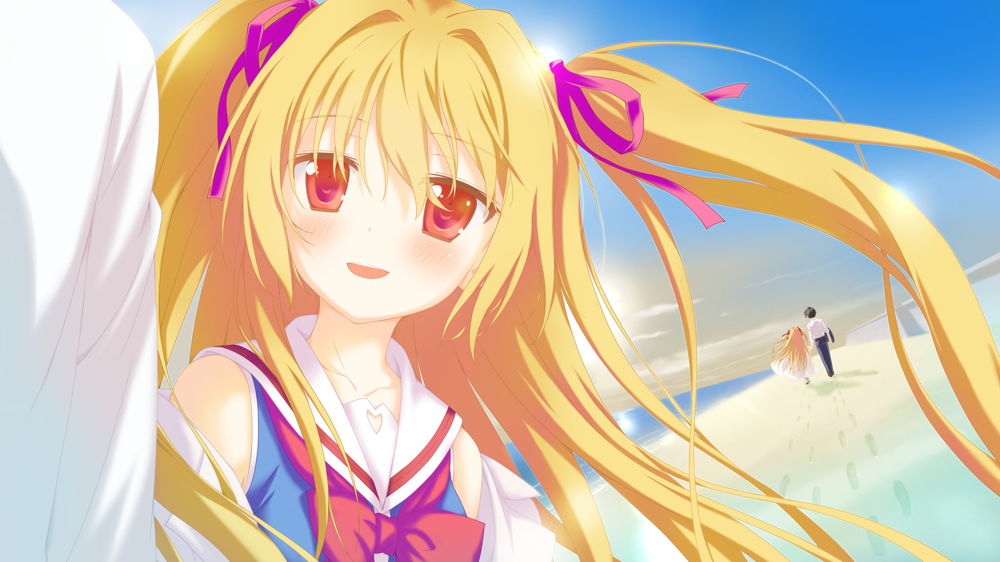
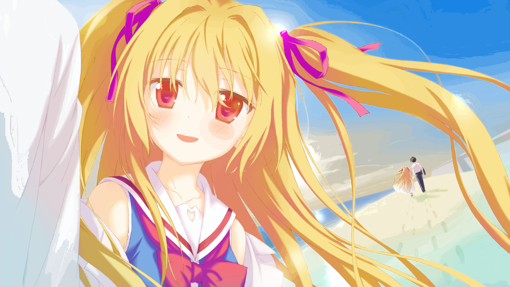
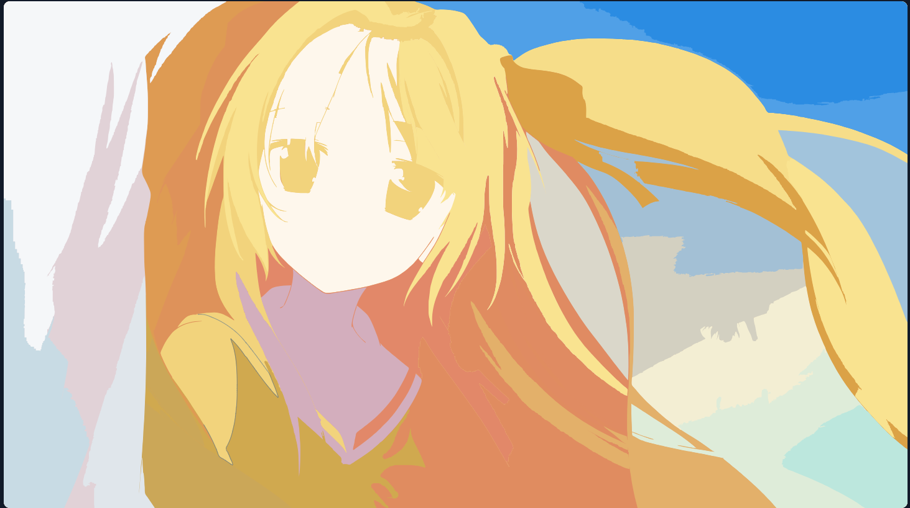

ANIME CG / SVG REPLAY
让一张 CG
逐笔成型
从彩色画面到可编辑的矢量路径。亲手拖动进度，观察轮廓与色块如何一层层出现；每一笔的 SVG 代码也能在旁边查看。
56,515条路径
3840 × 2160原始画布
4 档播放速度

BEFORE / AFTER
原图与矢量重绘
拖动滑杆，对照原图与 SVG 渲染结果。柔光和渐变会呈现为一层层颜色区域。


SVG 重绘原始 CGHOW IT WORKS
从颜色区域到逐笔动画
01 / 描摹
提取颜色区域
程序将原图转换为可编辑的贝塞尔路径，按画面的遮挡关系保留顺序。
02 / 绘制
轮廓出现，随后填色
播放时，每条路径先显示轮廓，再显现原有颜色，逐步组成整张图。
03 / 查看代码
每笔都能拆开看
暂停、切换上一笔或下一笔，查看该区域的 SVG 路径、颜色与坐标。

现在轮到你控制绘制进度
进入互动重绘 →支持 1、5、20、60 分钟播放档位，也能直接拖动到任意位置。